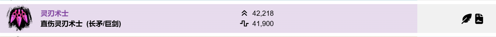
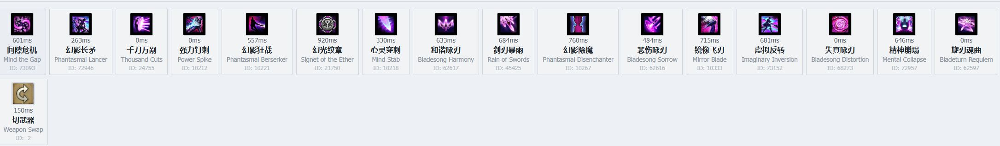
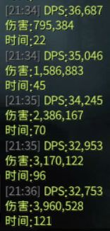

从0教你写灵刃循环
1，获取相关特性攻略

2，获得dps日志信息

3，利用dps导出工具，将基本循环导入到本地。
间隙危机(601ms)，幻影长矛(263ms)，千刀万剐(0ms)，强力钉刺(0ms)，幻影狂战(557ms)，幻光纹章(920ms)，心灵穿刺(330ms)，和谐咏刃(633ms)，剑刃暴雨(684ms)，幻影除魔(760ms)，悲伤咏刃(484ms)，镜像飞刃(715ms)，虚拟反转(681ms)，失真咏刃(0ms)，精神崩塌(646ms)，旋刃魂曲(0ms)，切武器(150ms)
4，配置按键，微调技能
单独配置f1、2、3技能，加入5豆施法的条件。
5豆跳出，5豆要勾选强制等待，表示按下f1、2、3后，必须等待5豆颜色消失才会用下个技能。
5豆=和谐咏刃
5豆=悲伤咏刃
维持buff
反色，取色原有原色，勾选反色，表示 当F1、2不可用的时候，才使用F3
特性中维持7秒，6.5秒基本合适，算上技能本身的施法
悲伤咏刃>6500=悲伤咏刃反色=和谐咏刃反色=不谐永刃
不谐永刃>6500=失真永刃
重置判断
幻影狂战反色，可以取图标正方形左上角的位置，基本刚好符合，这里可以不用纯黑，用反色，表示冷却中就用幻光重置
幻影狂战=1=幻影狂战反色=幻光纹章
切武器跟随
间隙危机=2=矛切剑
镜像飞刃=1=剑切矛
强力钉刺
由于苦痛咒语是二段，如果只按照取色来算，内置10秒会导致启停时把最后一段释放掉，导致要重新读条。
推荐2种方式，1是内置改为20秒，永远保留一层。
另外就是更换为毁灭利刃技能，代替强力钉刺
5，配置循环
起手：幻影除魔，因为机场可毛点输出，晚点进入战斗
间隙危机，幻影长矛，千刀万剐，毁灭利刃，强力钉刺，幻影狂战，心灵穿刺，5豆=和谐咏刃，剑刃暴雨，幻影除魔，幻影狂战=1=幻影狂战黑=幻光纹章，5豆=悲伤咏刃，悲伤咏刃>6500=悲伤咏刃反色=和谐咏刃反色=不谐永刃，不谐永刃>6500=失真永刃，镜像飞刃，虚拟反转，精神崩塌，旋刃魂曲，间隙危机=2=矛切剑，镜像飞刃=1=剑切矛
可基于实战适当调整顺序，例如，删除失真，手动释放。
6，最终循环，可直接导入
幻影除魔|间隙危机，幻影长矛，千刀万剐，毁灭利刃，强力钉刺，幻影狂战，心灵穿刺，5豆=和谐咏刃，剑刃暴雨，幻影除魔，幻影狂战=1=幻影狂战黑=幻光纹章，5豆=悲伤咏刃，悲伤咏刃>6500=悲伤咏刃反色=和谐咏刃反色=不谐永刃，不谐永刃>6500=失真永刃，镜像飞刃，虚拟反转，精神崩塌，旋刃魂曲，间隙危机=2=矛切剑，镜像飞刃=1=剑切矛，普攻||
幻影除魔,8,760,,,,,,,,,,b|间隙危机,2,601|幻影长矛,4,263|千刀万剐,0,0|毁灭利刃,9,500|强力钉刺,9,0,,,,,,,,,,,,,,,,,,1,20000,0|幻影狂战,4,557,,,,,,,,,,b|心灵穿刺,3,330|5豆|和谐咏刃,f1,633|剑刃暴雨,7,684|幻影狂战黑|幻光纹章,6,920,4,710,,,,,,,,b|悲伤咏刃,f2,484|悲伤咏刃反色|和谐咏刃反色|不谐永刃,f3,600|失真永刃,f4,1|镜像飞刃,2,715|虚拟反转,3,681|精神崩塌,5,646|旋刃魂曲,f5,0|矛切剑,`,150,2,700|剑切矛,`,150,2,600,4,550|普攻,1,10
[&DQcKGQEdQiojDyMP3RqPAY8BfwHqGoIB5RrtEgAAAAAAAAAAAAAAAAAAAAACCQEyAAA=]
腿部刺客，其他狂战，武器长矛、大剑，武勇精确、烟花、克达、潜行者

0灌注，1蛋糕
以上循环存在部分问题，例如，矛2、矛4、大剑4，剩余0.5秒就切武器了，可以自行在切武器加判断。
例如
间隙危机=2=矛4黑=矛切剑
镜像飞刃=1=大剑4黑=剑切矛
表示11点方位是黑色是才切武器，否则就等技能冷却并释放完才切。
具体可自行尝试修改，很久没玩灵刃了，不清楚目前的伤害，可对照视频调整技能先后顺序。
评论列表（20）
大佬能做个直伤吟游吗
@沉舟客 https://www.bilibili.com/video/BV1CcXeBNEZZ/?spm_id_from=333.337.search-card.all.click
@沉舟客 https://www.bilibili.com/opus/1185988225943994406
不好意思刷屏了，页面没有刷新，以为没有发出来，结果就发了三次。
请问间隙危机=2=矛切剑、镜像飞刃=1=剑切矛这两个计数，都比完整技能循环里的间隙危机、镜像飞刃的释放次数少一次。这是为什么呢？
@不懂 切武器后的跟随按键，是不会作为计数的，而是只作为普通的按键，只有当技能通过颜色判断释放，才作为计数看，具体是=1或者=2要自己根据打桩情况自己写，默认的=1，表示 当跟随按键触发2技能后，必须等颜色再次触发一次2技能，才作为切武器条件。
@melis 那以镜像飞刃=1=剑切矛来举例，就是当镜像飞刃释放一次以后、当它第二次再释放完成的时候才切武器，而不是在第一次释放完成以后马上就切武器。是这样理解吧？
@不懂 是的，跟随按键 不计数 只有单独技能判断，才算作+1
@melis 明白了
请问间隙危机=2=矛切剑、镜像飞刃=1=剑切矛这两个计数，都比完整技能循环里的间隙危机、镜像飞刃的释放次数少一次。这是为什么呢？
请问间隙危机=2=矛切剑、镜像飞刃=1=剑切矛这两个计数，都比完整技能循环里的间隙危机、镜像飞刃的释放次数少一次。这是为什么呢？
幻术的咒语技能最好开战前手动施法，每个技能可施法两次，取色取数字2底部左边横杠这样变成1的时候哪个位置没有取的色也就不会施放，延迟设置100左右，过低会把2次施法全部用完。
大佬能做个症状幻象的吗
@幻夜 症状灵刃原理一样，如果是蜃楼基本做不出来。
为啥我的不切武器 F1-F5都不放啊
@873695097 不放，5豆取色，增加5的模糊度
@melis 试过了 还是不行
@873695097 不行就把强制等待取消
@melis 好的可以了 谢谢M佬
撒花撒花，重点是学会了，做循环的思路，授人以鱼不如授人以渔，感谢M佬